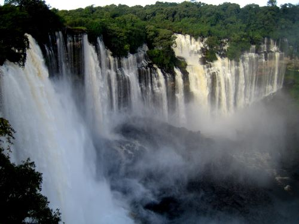
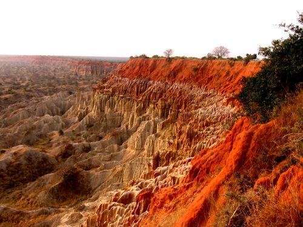
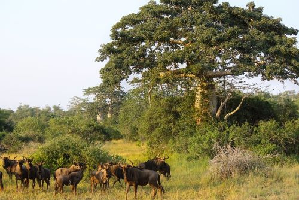
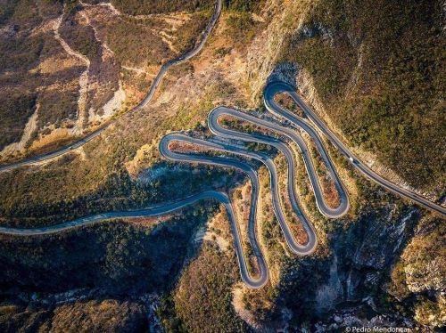
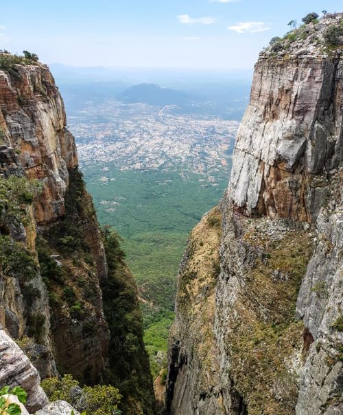
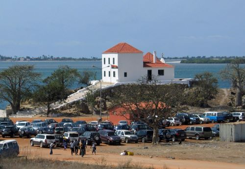
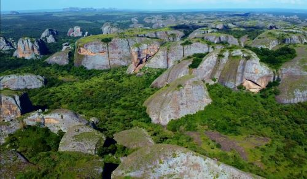

Places that you might love to visit
This page provides you with informationabout some places that you may think to stop by if you are visiting Angola
Calandula Falls
(formerly known as Duque de Bragança Falls) are waterfalls in the municipality of Calandula, Malanje Province, Angola. On the Lucala River, the falls are 105 meters (344 feet) high and 400 meters (1,300 feet) wide. They are one of the largest waterfalls by volume in Africa. The distance from Luanda is 360 km.
Viewpoint of the Moon
The Moon Viewpoint is a set of cliffs 40 km south of Luanda, in the municipality of Samba in Angola. Over time, erosion caused by wind and rain created the kind of lunar-martian landscape that we find today. This was the backdrop of the film “The Moon Lookout” from the Portuguese director Jorge António, the first Portuguese-Angolan film co-production, shot in 1993 and got the special prize at the Gramado Festival, Brazil. Today you can enjoy a stop during the latter part of the day at the “Grand Canyon” of Angola, unique on the planet and only found, in a similar aspect, in the Republic of Congo in much smaller formations, and in Madagascar in grey color. This is the only such cliffs in Africa with this geological formation of stunning almost Martian beauty.The tour will start at the Kissama National Park, where after visiting the park you can have lunch at Pousada Cuanza (not included.) After that, will stop at the Moon Viewpoint, where you’re able to watch the sunset reflected in such a beautiful work of nature.
Quissama, Kissama or Kisama
Is an Angolan national park, located in the municipality of Quissama, currently in the province of Luanda. It occupies an area of 9,600 km². Diversity in the species that we can find in this natural park, from elephants, giraffes, bambis, fan, turtles, snakes, wildebeests, crocodiles, springboks, hippos, zebras, manatees, various birds, squirrels, monkeys and among others can be found on this park.
Serra da Leba
is a mountain range in the province of Namibe, in Angola. Located near the city of Lubango, Serra da Leba is famous for its altitude (Mount Moco at 2,620 meters (8,600 ft) is the highest mountain in Angola), for its beauty and also for the Serra da Leba pass and road up to 1,845 m altitude.
Tundavala Gap
(in Portuguese, Fenda da Tundavala) is a viewpoint in the rim of the great escarpment called Serra da Leba. It is located some 18 km from the city of Lubango, in Huíla province, Angola. The escarpment marks the western limit of Bié Plateau. The altitude at the rim exceeds 2200 m, while the plain below is approximately 1200 m lower, which creates a rather impressive view, encompassing a distance of tens of kilometers. Tundavala National Stadium, in Lubango, which hosted the matches of Group D in the 2010 African Cup of Nations is named after Tundavala Gap.
National Museum of Slavery
The National Slavery Museum is a cultural heritage site that guards the original pieces of valuable items that were used at the time of the slave trade. Discover the history of Angola. Located in Morro da Cruz, in the Luanda city, the National Slavery Museum is an important cultural heritage of Angola dedicated to preserving the collective memory of the 500 years of slavery to which Angolans were subjected. Inaugurated in 1997, this important information system is filled with artefacts of high historical value that preserve and relate the long history of slavery in Angola. Its headquarters are in the Capela da Casa Grande, a 17th century temple, where slaves were baptized before boarding the slave ships that took them to America. The museum, which brings together and exhibits hundreds of pieces used in the slave trade process, is located on the former property of Álvaro de Carvalho Matoso, one of the largest slave traders on the African coast in the first half of the 18th century.
The Black Stones of Pungo Andongo
are a set of extensive monolithic rock formations, millions of years old, that rise well above the savanna that surrounds them. It is subdivided into West, South, North, and Southeast subsystems. The formation is an extension of the Cacuso Plateau. The western subsystem, the best known and most visited of all, is located in the municipality of Cacuso, in the province of Malanje, and is an important tourist attraction in Angola. According to tradition, the footprints carved into the rock are those of Ana de Sousa Ginga, the great monarch of the kingdom of Dongo. The commune of Pungo-Andongo is located right in the center of the western part of the formation, where the ruins of the old Fortress of Pungo-Andongo, erected by the Portuguese in 1671, are also located.
